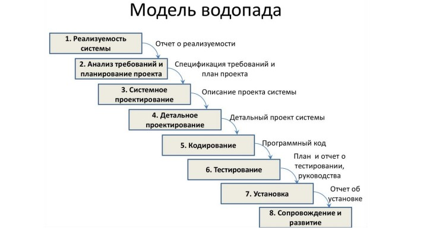

В СССР в этот же период начала развиваться теория и практика поточной организации работ по реализации крупных строительных проектов.
В СССР в этот же период начала развиваться теория и практика поточной организации работ по реализации крупных строительных проектов.
Середина прошлого столетия ознаменовалась началом активного развития информационных технологий. Прежде всего, военные ведомства и передовые предприятия многих стран понимают важность и ценность создания и развития информационных систем. С появлением вычислительной техники обработка больших объемов информации и автоматизация основных производственных процессов и органов управления на всех уровнях становятся наиважнейшей задачей для обеспечения военного превосходства наиболее развитых государств и конкурентных преимуществ коммерческих компаний. Разработчики национальных и крупномасштабных информационных систем стали первыми осознавать необходимость создания специальных средств проектирования и моделирования бизнес-процессов, позволяющими сделать их работу более эффективной и сократить не только сроки создания информационных систем, но минимизировать ошибки. Ошибки и неточности встречаются постоянно, чем раньше они диагностируется и локализуются, тем меньше стоимость переделки. Известно, что стоимость выявление и устранение ошибки на стадии проектирования в два раза обходится дороже, на стадии тестирования информационной системы в десять раз, а на стадии эксплуатации в сто раз, чем на стадии анализа бизнес-процессов и разработки технического задания
Традиционные методологии построены на последовательном выполнении всех фаз проекта, и конечный продукт будет получен только после выполнения всех этапов. Возвращение на предыдущий этап не предусмотрено и при появлении критических ошибок весь проект начинается сначала. Основным примером таких методологий разработки является каскадная модель или модель Водопад.
.Данная модель внесла фундаментальный вклад в понимание процессов разработки ПО следующими утверждениями: процесс должен подчиняться дисциплине, разумному планированию и управлению; реализация продукта должна быть отложена до полного понимания целей этой реализации.
Спиральная модель стала следующим (после водопадной) этапом развития методологий разработки, поскольку она решает основную проблему каскадной модели.S
Итеративная модель предполагает разбиение жизненного цикла проекта на последовательность итераций, каждая из которых напоминает ”мини-проект” , включая все фазы жизненного цикла в применении к созданию меньших фрагментов функциональности, по с авнению с п оекгом, в целом.
Общая концепция DevOps заключается в усилении кооперации между группами разработки (DEVelopments) и эксплуатации(ОРегайоп9 в рамках одной организации, несущими ответственность за разработку ПО. Данная методология это без преувеличения новый виток эволюции методологий разработки, поскольку ориентирована не только на удовлетворение требований заказчика в жестко определенные сроки, но и повышение качества и стабильности продукта.